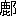

道教は支那に於て儒教と佛教と共に鼎立の勢を爲してゐる一大教系であり、其分派も少からず、又其教義も少しづゝの異を有して居り、草率に其の如何なるものであるかを説き、且つ之を評論することは、もとより不可能の事に屬する。儒教は歴史的にも教義的にも、むしろ平明なものであり、且又世間教に屬するもので、假令其の淵源たる時代即ち殷周の頃には數
 上帝を稱し、神鬼に事ふることを重んじたことを認めしむるとは云へ、他の所謂宗教なるものの、超世間的世界を有し、超人的教權者の存在を高調して、そしてそれに因依して教威を立てゝ世に臨むのとは大に異なつてゐる。そこで支那を掩葢するところの宗教らしい宗教は、佛教と道教とで、其他には清眞教等の微勢力のものが存するのみである。道教は支那に起り、支那に發達し、僅に朝鮮日本に多少の影響を
上帝を稱し、神鬼に事ふることを重んじたことを認めしむるとは云へ、他の所謂宗教なるものの、超世間的世界を有し、超人的教權者の存在を高調して、そしてそれに因依して教威を立てゝ世に臨むのとは大に異なつてゐる。そこで支那を掩葢するところの宗教らしい宗教は、佛教と道教とで、其他には清眞教等の微勢力のものが存するのみである。道教は支那に起り、支那に發達し、僅に朝鮮日本に多少の影響をしかし道教の源委流傳の状を記したものなどは甚だ乏しい。これは支那の文權を握つてゐる士人連が、昔から宗教には餘り取合はなくて、歴代の歴史にも佛教に關することなど餘り記載せぬ習慣になつてゐる、それと同樣な譯柄からであらう。で、隨つて我邦でも道教に關しては大略的の智識を有してゐる人も多くは無いやうに見えて、從來道教に就いての評論などは餘り耳にせぬ。一つは我邦に取つて道教の影響が稀薄であつた故でもあらう。
扨道教に就いて聊か語らう。しかし先づことわつて置くが、自分は道教の信仰者でも禮讃者でも同情者でも何でもない、淡然たる心をもつて道教に對してゐる。たとへば路上に於て一塊の石を眼にして、何の氣もなく、望むところもなく、これに對してゐる、それと同じ態度であるといふことである。
道教は何樣して興つたらう。これに對しての答の仕樣はいろ／＼有らう。其物を生じた時代の環境に其物の生じた因を求める、――即ち外的に之を求めるので、手近に云へば、他國より佛教が渡來して漸くに勢を得るのを見て、自國にもそれに摸倣して、そして自國的の色彩の多いものを釀し出さんとする希望が生じ、それから遂に從來は無かつたところの形式のものを出すに至つたとするのである。又他の一は自體に其物の生じた因を求める、――即ち内的に之を求めるので、本來存在してゐた或物が、自然
に發達して、そして遂に或形式のものを出すに至つたとするのである、大乘佛教が原始佛教から開展した如くに、元來然樣なるべきものが存在してゐて然樣なつたとするのである。これは那方にも道理づけられることであつて、常に其圈内の人からは後の答が發せられ、其圈外の人からは前の答が發せられがちである。道教圈内の人からは、無論に道教なるものは初から支那に其根柢・種子を有してゐて、そして時代によつて敷花成實したものと答へられるに定まつてゐる。宗教はいつも超人的超世間的の神秘的靈威的のものを背景とするのであるから、從つて超歴史的に自己の宗教の起因を基礎づけるのも常のことであるからである。然し其答が果して眞實であるか否かは、事實が之を語るべきのみであつて、其宗教の理屈が直ちに眞實であるとは認められなくても是非無いことである。道教の塲合は如何であらう。我は内的からのみでなく、外的からも之を檢討して、そして其眞實を把握せねばならぬのである。道教が道家及び神僊に因縁してゐるものであることは爭はれぬ明著の事實である。しかし先づ道教が如何なるものであるかを平明に看取して、そして次に道家・神僊家が如何なるものであるかをも平明に看取して、さて三者の與ふる概念を比較して見るときは、そこに道教成立の情状をば、無批判にせよ自然批判的に解知し得る譯であらう。
道經の説く所によると、一切は一より生じ、一が分れて三元と爲り、三元が三氣になり、三氣が三才を生じ、それから萬物が備はるといふのである。三元とは第一混洞太無元、第二赤混太無元、第三冥寂玄通元である。混洞太無元から天寳君を化生し、赤混太無元から靈寳君を化生し、冥寂玄通元から神寳君を化生した。此三君の居るところを三清とも三天ともいひ、玉清境即ち清微天に天寳君が居り、上清境即ち禹餘天に靈寳君が在り、太清境即ち大赤天に神寳君が居り、三君各
教主と爲りてゐるが、九天生神章經によれば三位一體で、三號殊なりと雖も本同一也とあるから、一原三色、玉清の氣は青、上清の氣は黄、太清の氣は玄白といふまでである。そして此の三君が即ち三洞の尊神で、道教に三清といつて三體の本尊とするのは是である。三洞といふのは洞眞・洞元・洞神の三であり、この三洞の部分けが教經の目となつて、洞眞部、洞元部、洞神部の名目があり、洞眞部は大乘、洞元部は中乘、洞神部は小乘といふのである。さて教により果を得て人間以上になるのを、下位から數へて六段階がまだ欲界、其上の十八段階位が色界、其上の四階位が無色界、合せて二十八天界は、苦惱は無く歡樂はあれども、まだ生死を免れない階級で、無色界の上の四階位は種民天といふ、種民天になれば生死三災の及ぶ能はざるところである。種民天の四ツの上が三境と云つて、太上老君天師太清境、九仙上清境、九眞玉清境、いづれも善美の世界であり、又其上の最上世界が即ち大羅天で、其中に過去元始天尊、見在太上玉皇天尊、未來金闕玉晨天尊が居たまふのである。洞眞部は元始天尊より出たもの、洞元部は太上道君より出で、洞神部は太上老君より出たものであるとされてゐる。元始天尊は佛教で云へば佛である、十號具足である、自然である、無極である、大道である、至眞である、太上である、道君である、高皇である、天尊である、玉帝である、陛下である。耶蘇教で云へば、無極であり大道であり自然である元始天尊は即ち神である。若し詳説すれば、道教も何にせよ漢末から今に至る長い年月を經て來てゐるものであるから、其中には變遷もあり開展もあり、又各派の主張もあるしするから、中
之を明白に筋道立てゝ述べることは容易でないが、概略は前述の如きものと見做して大過は無いのである。そこで局外者から一應の觀察を下して見ると、元始天尊は自然なのであるとするから、其思想は支那に上古から存在したに疑ひないが、自然を人格化して神人の如きものとなし、元始天尊といふ名目を付したのは、何時頃から起つたことか、甚だ明瞭でない。元始天尊は靈寳無量度人上品妙經六十一卷にあらはれて來るもので、龍漢の初、天地始めて分れた時に、天尊が此經を撰したとある。そしてそれは玉晨道君に授けられたとある。それで同經の各章の首に、道言云
とある道は、道徳の道でもなく、固有名詞の「道」といふものの如くに見え、上陽子の同經の註には、道君經義を演説して直ちに道言ふと曰ふとあり、陳椿榮の註には、上清玉晨大道君靈寳天尊の言也、道君經を序す、故に道言ふを以て首と爲すとある。道君は乃ち元始天尊の弟子で、太微天帝君の師である。それはそれで宜いとして、若し道教の密義から云へば、元始天尊は道法の宗主であつて、そして元は自己の元神、一身の主であるのである。即ち本文字通りに讀去れば、元始天尊といふ神の如きものが有り、其の道を受けた玉晨大道君といふものが有つて、恰も釋迦佛に總持第一の阿難尊者が有つて如是我聞の一語が經首に加へられた如き觀を爲してゐるのである。そして又元始天尊は虚皇の應號である、佛教で云へば應身である、で、洞神經には、妙象は形無し、應感は體有り、眞精の氣、化して姿容を成すと説いてある。宗教といふものは、何處のも何時のも、端的に暴露すれば大抵かういふところを根に有つてゐるものだが、道言の二字を以て度人妙經のはじまつてゐるのは巧妙である。そして老子に、物有りて混成し、天地に先だちて生ず、之を字して道といふ、とある其道をもつて來て、夫れ道は本は言無し、言を假りて以て道の用を顯はす、世法を以て釋すれば則ち道君經義を演説するを直ちに道言ふと曰ふ、と玄義を俗釋に兼ねて説いてゐるのなぞ、中に巧いものだ。が、局外者は感心してばかりは居られない、元始天尊や玉晨道君や度人妙經の此の世に現はれた筋道を遂窮すると、元始から玉晨、玉晨から玄一眞人に授け、玄一が天眞皇人に授け、皇人が之を秘藏してゐると、軒轅氏の時に、皇人と太清の三仙と峨媚山に會したに際して、黄帝が再拜して道を求めたので、皇人が授くるに五牙三一の文と度人經上卷とを以てした。黄帝は之を修して仙となつた。後に帝 が牧徳臺に於て皇人から本章玉歴章を授けられた。西漢の元封の間に、西王母が上卷并に二章を武帝に授けたので始めて全經を成した。東漢の時、太上が降つて于吉に授け、靈書上篇并に太平經一百五十卷を増した。桓帝の時に老君が蜀に降つて天師（張道陵）に度人、北斗、諸經録千餘卷を授けた。呉の時に太極眞人が會稽の上虞山に於て太極左宮仙翁葛玄に度人經を授け、靈書中篇を増した。鄭眞人思遠が抱朴子葛洪に經本を授け、又靈書上下篇太極眞人の後序を増した。即ち今の全本である。晋の王纂が道君に遇ひて、此經及び諸經數十卷を賜はり、元魏の時に寇謙之が嵩山に居りて修行し、太上を感ぜしめて此經并に餘經六十餘卷を授かつた。それから世に流布して、政和の天子の註、齊の嚴東啓、唐の薛幽棲、李少微、成玄英の註、寳慶の初に蕭觀復の内義等が出來るに及んだ、といふのが陳觀吾の言である。此の由來記の中には信ぜられることと信じ難いこととが錯雜してゐる。漢の武帝の時に始めて全經を成すとあるが、其前のことは無論荒唐で考へるべきところも無く、武帝の時にかゝるものが出たらうとも思へぬのは、本經の文氣が全く西漢の古色を帶びてゐないのでも、少し文章の氣味を解する者の心づくことであらう。張道陵や葛仙翁は道教の大立物であるが、それらより後の葛洪は著述の多い、文藻に長けた、博識の人であるのに、其の著の抱朴子や金※［＃「さんずい＋（勹＜一）」、U+6C4B、154-1］經等に、元始天尊の思想の影響も度人妙經の記事の影響も見出し難いのは、度人妙經が然云はれてゐるに關はらず、葛洪の眼には入つてゐなかつたやうに考へられてならない。さすれば寇謙之あたりから出たものであらうことは、隨分謙退の態度を取つて推察したところでもの結果である。度人妙經は甚だ多く天を説いてゐる。天は妙果を得たものの居るところの勝境である。抱朴子は餘り多くそんな事を説いてゐない。抱朴子は道を尊んでゐる、天尊を尊んでゐるのではない。抱朴子は神仙にあこがれてゐる。然し度人妙經の仙、佛教中の天人のやうなものにあこがれてゐるのではない。抱朴子には符を記してゐる、度人妙經にも符が示されてゐる。然し抱朴子の符は恐らくは後人の添へたものであらうと考へられ、且又其符も同じくはない。護符の信仰が葛洪にもあつたとして見て、そして度人妙經をも見たものとすれば、少くとも度人妙經の符を信用すべきである。抱朴子が鄭思遠から道を傳へられたことは實だが、思遠から度人妙經靈書上下篇を受けたらしい證は何處にも見出せぬ。して見れば、度人妙經が却つて抱朴子を假りて其金箔にしたことは明らかで、其經に見えるやうな思想や感情は、まだ抱朴子の時には無かつたとしか思はれぬ。葛洪の時に無かつたらしいものが、張道陵や于吉の時に有つたらしいとは思はれぬ。于吉に就いては抱朴子は言及してゐる。于吉の書は殘闕してゐるし、且眞僞のほども覺束なく、文章も筆者の文藻不足の爲か知れぬが、同時代のものとは大分調子が違ふが、抱朴子の評が相應してゐるところから先づ之を僞書で無いと認めて、さて于吉の書と度人妙經とを照らし考へると、于吉に於ても元始天尊の思想は見出されないで、たゞ漠たる神の如きものが見出されるのみである。かういふことを語つてゐると、談が微細になつて際限が無いから、それは他日ゆつくりした暇のある時のこととして、道教の源頭から語り出さう。
が牧徳臺に於て皇人から本章玉歴章を授けられた。西漢の元封の間に、西王母が上卷并に二章を武帝に授けたので始めて全經を成した。東漢の時、太上が降つて于吉に授け、靈書上篇并に太平經一百五十卷を増した。桓帝の時に老君が蜀に降つて天師（張道陵）に度人、北斗、諸經録千餘卷を授けた。呉の時に太極眞人が會稽の上虞山に於て太極左宮仙翁葛玄に度人經を授け、靈書中篇を増した。鄭眞人思遠が抱朴子葛洪に經本を授け、又靈書上下篇太極眞人の後序を増した。即ち今の全本である。晋の王纂が道君に遇ひて、此經及び諸經數十卷を賜はり、元魏の時に寇謙之が嵩山に居りて修行し、太上を感ぜしめて此經并に餘經六十餘卷を授かつた。それから世に流布して、政和の天子の註、齊の嚴東啓、唐の薛幽棲、李少微、成玄英の註、寳慶の初に蕭觀復の内義等が出來るに及んだ、といふのが陳觀吾の言である。此の由來記の中には信ぜられることと信じ難いこととが錯雜してゐる。漢の武帝の時に始めて全經を成すとあるが、其前のことは無論荒唐で考へるべきところも無く、武帝の時にかゝるものが出たらうとも思へぬのは、本經の文氣が全く西漢の古色を帶びてゐないのでも、少し文章の氣味を解する者の心づくことであらう。張道陵や葛仙翁は道教の大立物であるが、それらより後の葛洪は著述の多い、文藻に長けた、博識の人であるのに、其の著の抱朴子や金※［＃「さんずい＋（勹＜一）」、U+6C4B、154-1］經等に、元始天尊の思想の影響も度人妙經の記事の影響も見出し難いのは、度人妙經が然云はれてゐるに關はらず、葛洪の眼には入つてゐなかつたやうに考へられてならない。さすれば寇謙之あたりから出たものであらうことは、隨分謙退の態度を取つて推察したところでもの結果である。度人妙經は甚だ多く天を説いてゐる。天は妙果を得たものの居るところの勝境である。抱朴子は餘り多くそんな事を説いてゐない。抱朴子は道を尊んでゐる、天尊を尊んでゐるのではない。抱朴子は神仙にあこがれてゐる。然し度人妙經の仙、佛教中の天人のやうなものにあこがれてゐるのではない。抱朴子には符を記してゐる、度人妙經にも符が示されてゐる。然し抱朴子の符は恐らくは後人の添へたものであらうと考へられ、且又其符も同じくはない。護符の信仰が葛洪にもあつたとして見て、そして度人妙經をも見たものとすれば、少くとも度人妙經の符を信用すべきである。抱朴子が鄭思遠から道を傳へられたことは實だが、思遠から度人妙經靈書上下篇を受けたらしい證は何處にも見出せぬ。して見れば、度人妙經が却つて抱朴子を假りて其金箔にしたことは明らかで、其經に見えるやうな思想や感情は、まだ抱朴子の時には無かつたとしか思はれぬ。葛洪の時に無かつたらしいものが、張道陵や于吉の時に有つたらしいとは思はれぬ。于吉に就いては抱朴子は言及してゐる。于吉の書は殘闕してゐるし、且眞僞のほども覺束なく、文章も筆者の文藻不足の爲か知れぬが、同時代のものとは大分調子が違ふが、抱朴子の評が相應してゐるところから先づ之を僞書で無いと認めて、さて于吉の書と度人妙經とを照らし考へると、于吉に於ても元始天尊の思想は見出されないで、たゞ漠たる神の如きものが見出されるのみである。かういふことを語つてゐると、談が微細になつて際限が無いから、それは他日ゆつくりした暇のある時のこととして、道教の源頭から語り出さう。一體道教は黄帝老莊等から導かれ出されたやうに思はれてゐるのが、普通人の認定になつてゐる。成程道教では老子を尊んで太上老君としてゐる。莊列の如きも之を尊んで、其書を南華眞經、冲虚眞經などと稱し、經典扱ひにしてゐる。此等は周知の事である。然し考察無しに、老莊から道教が出たものとするのは早計である。神仙もまた道教のものになつてゐる。神仙と道教者とは同じもので、神仙は即ち道教の成就者及第者のやうに思はれてゐるのが一般認識である。しかしこれも無批判に是認するのは危いことである。
最初に道教といふ宗教くさいものは支那には無かつたのである。目して道家とさるゝものは有つた。しかし其道家なるものは宗教的色彩香味あるものを奉ずるものでも何でも無かつた。目して神仙家とさるゝものは有つた。しかしそれも後世の道教者の如きものでは無かつた。
先づ道家といふものは何樣なものであつたらう。漢の班固が史家として當時の一般認識に本づいて記したと思はるゝ文に何とあるか。曰く、道家者流は蓋し史官に出づ。成敗存亡禍福古今の道を歴記し、然して後に要を乘り本を執り、清虚以て自ら守り、卑弱以て自ら持す、これ人に君として南面するの術也。堯の克く讓り、易の※［＃「口＋慊のつくり」、U+55DB、256-2］
一謙して四益ある、これ其の長ずるところ也。放者之を爲すに及んで、則ち禮樂を絶去し、兼ねて仁義を棄てんと欲し、曰く獨り清虚に任じて、以て治を爲す可しと。かういふやうに云つてゐる。そして其の道の著書を列擧してゐる。當時の道家といふのは儒家、法家、名家、農家といふやうな各家に對しての一家の稱であつて、明らかに世に立つてゐる一流派の學家であり、宗教くさいものではないのである。今其の道家といふものを實に就いて檢して見ると、伊尹、太公、辛甲、鬻子、管子、老子、文子、子、關尹子、莊子、列子、老成子、長盧子、王狄子、公子牟、田子、老莱子、黔婁子、宮孫子、冠子、周訓、黄帝、力牧、捷子、曹羽、郎中嬰齊、臣君子、鄭長者、楚子、道家言等九百九十三篇が擧げてある。此中亡びて今に存せざるものは其内容を言ふことは出來ないが、今猶存してゐるものに就いて考ふるに、其の那個のものにも後の所謂道教のやうなものは無い。道教の理論のやうなものには、成程老子や莊子や管子の所説と似通ふものがある。しかしそれは道教が其等の言論を借用し若くは攘取して、自己を飾つたものであると云へるのである。道教に於て易經や易緯が多く用ゐられてゐるのと同じく、此等の諸家の言説が用ゐられたからとて、易と道教とが同じものであると云へぬと同樣に、道教と此等諸家が同じものとせらるべき理は無い。老子の何處に宗教があらう、莊列の何處に元始天尊や玉晨道君があらう。此等の人はむしろ無宗教的思想を有せる人である。寓言的に、擬人法を用ゐて、神人を點出したことは莊子などに存しても居るが、何も禮拜叩頭の標的として、宇宙の主宰者のやうなものを設けてゐるのではない。三清境、三十六天なんどいふことは、道家のどこにも存在しては居ないし、其萠芽と見らるゝものさへ見出し得ない。道教の天地構成談は、列子や易乾鑿度に本づいても居るやうに見えるが、それは道教の方で借用したまでであらう。道教の宗教として成立つてゐる事相の其重要部分は都べて道家には全く無いところの事である、むしろ道教は佛教若くは婆羅門教に似た教相を有してゐる。所謂道家の那處にも、道教の御有難いところは無いのである。道教の宗教として世に臨んでゐる部分は、決して道家の那處に胚胎してゐるといふことすら全く無いのである。老子は道教の根本となり、教導者となり、太上老君として尊まれて居り、張道陵に現はれて教を授けたと云はれては居るが、明白に平心に論ずるならば、元始天尊のお末社でもお手傳でも何でも無いことは疑ひない。老君が靈寳度人妙經や北斗經などを張道陵に授けたなどと云はれるのは、老君に取つては、いゝ面の皮の端役を仰せつかつたもので、其昔徐甲といふ日傭取りに賃錢不拂をしたまゝ逃げ出したといふ噂を得たよりも迷惑のことであり、樗蒲一の先祖は老子だなぞと世本に記されたよりも有難くないことであらう。道徳經五千言、何處をたゝいても、大梵隱語などといふ奇異なことが秘義になつてゐるやうな度人經を人に授けさうなことも無く、又北斗星の禮拜などを人に教へることも有りさうにも無い。道教の經文は、三元八會の字、天地始めて分れた時に、元始天尊が書かれたところの、妙氣の成るところの、八角垂芒、凝空の雲篆といふのがはじまりで、蒼頡なんぞの作つた文字に關かる如きものでは無いとあるのだから、道教徒の方から云つても、道家と道教とは別であるのであり、關係があるとしても老子などは小僧ッ子であるのである。であるから、何樣やら佛教の判釋を眞似て作つたやうな道藏の年を教主として人を度し世を濟つたともされてゐるのである。が、それは宗教の玄談として、道家と道教とは、局外者から見れば、始は正に別なものである。次に道教に於て其道の成就を得たものが即ち神仙なるかの如く一般からは認識されてゐる。道教各派の祖師は神仙であるとされて居り、神仙道即道教、道教即神仙道の觀念は一點の疑ひも無く世に是認されてゐる。そして道教の何の經論史傳を見ても、到る處に神仙と道教者との接觸や混淆や或は同一の事實が見出される。例へば道教相承次第録を見ても、第一代老子から第四十一代林通元に至る間の代
子弟の系に於て茅濛だの、王子喬だの、李少君だの、欒巴だの、左慈だの、世の所謂神仙がある。しかし神仙といふものが元來世俗の見解に從へば不老不死で神通遊戲を事とし得る稀異な超人的のものとしてあるが、それ等の人、雜書野乘に見えてゐるそれらの人の多數が悉く道教の中に取入れられ、又は關係してゐるといふのではなく、上代からの神仙中の幾パーセントかが道教の中の重要人物、又は裝飾人物になつてゐるといふのが事實である。道教の方から云へば、道教での修行が成つて人間を超越した人が即ち神仙であるといふのであらうが、神仙の方で大頭目株の彭祖が何も道教者であつたのでも何でもない、劉向の列仙傳や葛洪の神僊傳中の仙人で、一向に道教に關係なく、勝手に 霞吸露の閑生活をしてゐるものは澤山にある。此等の仙人と道教とは何樣いふ間柄に置かれてあるものか尋ねて見たい。一體仙人といふものは莊列の輩の寓言に出て來たのが一ツ、古代人の神話や傳説的に出て來たのが一ツ、後世の與太談から出て來たのが一ツ、以上の三流れから出て來たのでもあらうが、既に神仙といふ概念が成立つてからは、神仙にならうといふことも生じたらうし、又自己の崇拜目的に對つてそれを神仙化したことも起つたらう。老子などは何も仙人でも何でも無い、道徳五千言、何處に不老不死の道などが説いてあらう。たま／＼不死の二字が本文にあつたり、玄牝だの、天地の根だのといふ妙な文字が下してあつたからとて、人間ばなれをして雲の中で遊んでゐるやうな神仙の道などは、一言だつて老子は語つてゐない。老子を仙人の親分にしたのは後の事である。抱朴子に劉向の撰する所の列仙傳七十有餘人とある其列仙傳には入れられたが、列仙傳は劉向の撰では無からう、恐らく後漢後の僞撰で、劉撰ではない、郭元祖の列仙傳讃といふのが今の列仙傳だらう。容成公の傳のところに、「能く補導の事を善くす、精を玄牝に取る、其要、神を
霞吸露の閑生活をしてゐるものは澤山にある。此等の仙人と道教とは何樣いふ間柄に置かれてあるものか尋ねて見たい。一體仙人といふものは莊列の輩の寓言に出て來たのが一ツ、古代人の神話や傳説的に出て來たのが一ツ、後世の與太談から出て來たのが一ツ、以上の三流れから出て來たのでもあらうが、既に神仙といふ概念が成立つてからは、神仙にならうといふことも生じたらうし、又自己の崇拜目的に對つてそれを神仙化したことも起つたらう。老子などは何も仙人でも何でも無い、道徳五千言、何處に不老不死の道などが説いてあらう。たま／＼不死の二字が本文にあつたり、玄牝だの、天地の根だのといふ妙な文字が下してあつたからとて、人間ばなれをして雲の中で遊んでゐるやうな神仙の道などは、一言だつて老子は語つてゐない。老子を仙人の親分にしたのは後の事である。抱朴子に劉向の撰する所の列仙傳七十有餘人とある其列仙傳には入れられたが、列仙傳は劉向の撰では無からう、恐らく後漢後の僞撰で、劉撰ではない、郭元祖の列仙傳讃といふのが今の列仙傳だらう。容成公の傳のところに、「能く補導の事を善くす、精を玄牝に取る、其要、神を つたのは、方技の士、所謂方士であつて、それは秦漢に一ト騷ぎしたが、方士は何も宗教のやうなものを有し、本尊くさい禮拜目標を有してゐたとは考へられず、若し有つたとしてもそれは黄帝ぐらゐであつたらうと想はれるのみである。神仙家はむしろ方士の方で、道教とは始めは別である。漢の時に神仙家といふのは班固が擧げてゐるのでは十家であつて、班氏は云つてゐる。「神仙なる者は性命の眞を保つて而して其外に游求する所以の者なり、聊か以て意を
つたのは、方技の士、所謂方士であつて、それは秦漢に一ト騷ぎしたが、方士は何も宗教のやうなものを有し、本尊くさい禮拜目標を有してゐたとは考へられず、若し有つたとしてもそれは黄帝ぐらゐであつたらうと想はれるのみである。神仙家はむしろ方士の方で、道教とは始めは別である。漢の時に神仙家といふのは班固が擧げてゐるのでは十家であつて、班氏は云つてゐる。「神仙なる者は性命の眞を保つて而して其外に游求する所以の者なり、聊か以て意を
 する無からんとす、然り而して或者は專ら以て務と爲す、則ち誕欺怪迂の文、彌以て益す多し、聖王の教ふる所以に非るなり。孔子曰く、隱を索め怪を行ふ、後世述ぶる有り、吾之を爲さずと。」これで當時の神仙家といふものは解知される。道家と異なることも分明で、此道の成就者が即ち神仙であるのだが、神仙になれるものは元より少いから、誕欺怪迂の文、彌多し、と貶したのでもあらう。其の如何なることを説いたものかは、今其書の存するものが無いから言ふことは出來ないが、書名に黄帝を稱することの多いところから考へると、醫道の祖たる黄帝に假りて、神秘的な健康法を行ふことを高調し、以て死生を超越するやうなことを云つたものであり、下つては導引按摩等の手近なことをも行つたらうことは、黄帝岐伯按摩といふものが十卷有つたことに照らしても想知される。所謂金丹の術、――これには藥物を用ゐる外丹の法、歐羅巴のアーケミーに肖たものと、内丹の法、即ち身心の扱ひによつて丹を結ぶ法との二種あるが、此等の方術をも研究したので有らう。仙人魏氏の書なども蓋し此神仙家の系では無からうかと思はれ、又胎息の法、導引の法など後世に行はれたものも此系より出てゐると想はれるが、それ等は勿論道教者に攝收され、そして道士等に長く密儀として傳へられて居り、魏氏書などは宋の代には老子と同格に三輔中に置かれたものである。但し吐納導引の術が道教者に奉行され、又煉丹の術が道教者の修行の玄奧な部分を爲して居り、それの夥しい研究や論賛が爲されたにせよ、又それは道教に包容されて、其理義を以て道教の經旨を解かるゝやうな事實は存するにせよ、それの中に道教の宗教的部分は包含されてゐるのではない。元始天尊は煉丹の秘書には面を出しては居ない。たゞ元始天尊を自然として釋し、無極として釋し、大道として釋する時に至つては、丹經も亦道教の寳書たり眞髓たり得るは勿論の事で、道教には限らぬことだが、宗教はいつも其の奧の奧に圓融無礙の妙諦を有してゐるのだから、如是である。
する無からんとす、然り而して或者は專ら以て務と爲す、則ち誕欺怪迂の文、彌以て益す多し、聖王の教ふる所以に非るなり。孔子曰く、隱を索め怪を行ふ、後世述ぶる有り、吾之を爲さずと。」これで當時の神仙家といふものは解知される。道家と異なることも分明で、此道の成就者が即ち神仙であるのだが、神仙になれるものは元より少いから、誕欺怪迂の文、彌多し、と貶したのでもあらう。其の如何なることを説いたものかは、今其書の存するものが無いから言ふことは出來ないが、書名に黄帝を稱することの多いところから考へると、醫道の祖たる黄帝に假りて、神秘的な健康法を行ふことを高調し、以て死生を超越するやうなことを云つたものであり、下つては導引按摩等の手近なことをも行つたらうことは、黄帝岐伯按摩といふものが十卷有つたことに照らしても想知される。所謂金丹の術、――これには藥物を用ゐる外丹の法、歐羅巴のアーケミーに肖たものと、内丹の法、即ち身心の扱ひによつて丹を結ぶ法との二種あるが、此等の方術をも研究したので有らう。仙人魏氏の書なども蓋し此神仙家の系では無からうかと思はれ、又胎息の法、導引の法など後世に行はれたものも此系より出てゐると想はれるが、それ等は勿論道教者に攝收され、そして道士等に長く密儀として傳へられて居り、魏氏書などは宋の代には老子と同格に三輔中に置かれたものである。但し吐納導引の術が道教者に奉行され、又煉丹の術が道教者の修行の玄奧な部分を爲して居り、それの夥しい研究や論賛が爲されたにせよ、又それは道教に包容されて、其理義を以て道教の經旨を解かるゝやうな事實は存するにせよ、それの中に道教の宗教的部分は包含されてゐるのではない。元始天尊は煉丹の秘書には面を出しては居ない。たゞ元始天尊を自然として釋し、無極として釋し、大道として釋する時に至つては、丹經も亦道教の寳書たり眞髓たり得るは勿論の事で、道教には限らぬことだが、宗教はいつも其の奧の奧に圓融無礙の妙諦を有してゐるのだから、如是である。一般認識に反して、道教と道家とを引離し、又道家と神僊家とを引裂き、又道教と神僊とを引離すことは、何の功も無いことのやうだが、道教といふものの眞相を究め、又道家神仙家の眞相を語るときは、斯樣なるのは自然の事で、此等の混淆雜糅は道教の勢威を保たしむる上には却つて必要でもあり、又其混淆其物の上に道教は成立つてゐるのだと云へることでもあるが、眞面目に道教を研覈するときは、何樣しても以上述べたやうに云張るに至らねばならぬのである。外面的に考察して、道教が宗教として成立つに至つたのは、後漢からで、道家神仙家の一家として成立つてゐるのは既に前漢若くは其前の時であるから、おのづからにして此は此、彼は彼である。況んや道教の本幹を爲す宇宙觀や神觀は明らかに道家にも神仙家にもない別途のもので、むしろ婆羅門教に類するものであるに於て、道教と黄老・神仙との關係は大讓歩して姻戚關係ありとするも、親族關係ありとするのは當らないことである。
宗教に於ては其始原に於て祭祀といふことが大なる要素を爲してゐることは何處に於ても同じことである。換言すれば宗教は原始人が其の尊敬し若くは愛せる者の有より無に徃けるに對して、やるせなき感情をあて處なきところに摸索的に放射し、又は天變地異、若くは宇宙の運行、人間の起滅等に對して、不可知の或物を有限の智識の圈外に超理的に感じて、そして恐怖畏伏の念を發動し、若くは凝結せるところより起つてゐるか、稀には飽く無き慾望の無際限的希求を思想的に具象させて、それの中心に憧憬の念を寄せるところより起つてゐるかであつて、それが形式的には祭祀の状を取り、やがて外皮には訓導の詩的言語、内核には幽玄の融通無礙的理致を具備するに及んで宗教と成立するものである。此意味に於て、先づ宗教が有つて後に其祭祀の儀禮が成立つのではなく、先づ祭祀が有つて後に宗教が成立つのである。佛教は再生宗教――印度在來の古宗教等より
 釀し出された――であるから却つて原始に於ては理論的信條のみを有して祭祀形儀をもつてをらぬやうだが、それでも宗教と祭祀形儀とが離れ難い關係にある證としては後に至つては阿彌陀や毘盧沙那や梵天や其他の見苦しいほどのものに對して叩頭禮拜の祭祀的状態を現はすに至つてゐる。支那に發した道教は此意味に於て支那に於ける上古よりの祭祀の目的物や精神や形儀と不離の關係を有してゐる。
釀し出された――であるから却つて原始に於ては理論的信條のみを有して祭祀形儀をもつてをらぬやうだが、それでも宗教と祭祀形儀とが離れ難い關係にある證としては後に至つては阿彌陀や毘盧沙那や梵天や其他の見苦しいほどのものに對して叩頭禮拜の祭祀的状態を現はすに至つてゐる。支那に發した道教は此意味に於て支那に於ける上古よりの祭祀の目的物や精神や形儀と不離の關係を有してゐる。支那に於ける神の思想は何から發生したか。蓋し電光を見て上古の人が畏敬の念を起したに本づくであらうことは予の「神考」に記した通りであるが、それより年處を經て所謂神なるものの概念が成就し、神に仕ふるもの、男覡・女巫・祝・宗を生じた。南正重が天を司どり、火正黎が地を司どり、共工氏の子の句龍が死して社祠と爲り、烈山氏の柱が死して稷祠と爲り、舜の時には上帝・六宗の思想が發達し、高山大川をも祭り、羣神をも認むるに及んだ。泰山、衡山、華山、恒山、嵩山は崇拜の目的であつた。後に道教で、五嶽眞影などといふ字の如く畫の如き奇なるものを有難がるのも、遠い古からの遺習に出たことで、後に此等の山
は皆道教の本山たるの觀を生じた。殷の帝乙が驕慢で神をあなどり、革嚢に血を盛り、仰いで之を射つて、遂に雷に撃たれて死んだといふ傳説は、雷電を神の作用の一とする古い思想の現はれで、之も後に道教で震雷を神威の發動と見做し、五雷正法などといふことを云出す源頭になつてゐる。周の時は后稷を祀つて天宗に配し、文王を祀つて上帝に配し、天子・諸侯・大夫・庶人まで各其の祭るべき神、乃至祖宗を祭ることは、人の當然に爲すべきこととされた。當時の上帝が後の元始天尊に進化したのか、門神が神荼欝壘（これは又蓋し雷の表象である）となつたか、井が井君となり、竈が竈神となつたか、それは別に考證を待つて定めらるべきだが、いづれにせよ早くからいろ／＼のものが祭られた。秦の襄公が少昊を崇めて西畤を作り白帝を祠つた。後の五帝の思想の起つたのは蓋しこれからで、少昊金天氏と西と白とは五行思想に於て結びついてゐるのであつて、五行の思想は、戰國に鄒衍に鼓吹され、漢に於て盛に行はれたが、蓋し洪範のむかし、周易のむかしより、隨分夙に支那に潜在したものであると云つても宜いやうな氣がする。其後に秦の宣公が密畤を作り、青帝を祭つた。同じく穆公が夢に上帝に見えて、上帝が穆公に命じて晋の亂を平げよと云つたといふ傳説がある。上帝はハッキリと擬人せられたのは穆公の夢がはじまりかと考へられるが、これより前既に長い／＼間に上帝の思想は凝結されて人の如き形及び作用を有するものとなつてゐたのであらう。穆公に先だつて文公が畤を自分の夢及び史敦の言に本づいて雍に作つた。雍は前から神異の地とされてゐて、武畤好畤などいふものがあつた。そして黄帝の時から神を祭ることの有つた地とされ、晩周の時も祭つたと云はれてゐたが、それは不確の談だつた。ところが文公が畤を作つた後、石を陳倉の北阪に得て之を祠つた。其神は歳に數來ることもあり、來らざることもあり、其來る時は流星の如く東方より來りて光り輝いて祠城に集まり、其聲は殷として雷の如く、雉も夜鳴して之に應じたと云はれる。これは寳夫人といふ神と葉君といふ神との合ふためだとあつて、陳寳の祠を作つた。論議の種子となるに至つたのである。秦が始皇に至つて天下の主となるに及び、五徳の説により、秦は周の火徳に代り、水徳を以て帝たりとした。始皇は儒生を喜ばず、泰山に封じ、梁父に禪するに及んでも、其禮は雍に於て上帝を祀るの儀を用ゐた、と云はれてゐる。泰山の封禪は其爲といふわけでも有るまいが、暴風雨に遇つて好結果を得なかつたので儒生等はこれを譏つた。それから始皇は東のかた海上に遊んで、名ある山川や八神やを祭り、僊人を求めるなどといふことをするに及んだ。八神といふのは古からあつて、天主、地主、丘主、陰主、陽主、月主、日主、四時主の八だが、これ等は皆支那の東北地方にあつた神である。秦はもと西北方から出て來たのであるが、天下の主たるに至つて東北方の神をも神として崇めたのである。五徳終始の論も東北方に行はれた説であるが、秦はこれを採用したのである。僊人も羨門高、王子喬、元尚、宋母忌、最後、皆燕人で、東北方の者だが、始皇は燕齊の人が之を盛稱し、且又三神山も渤海即ち東北海の中に在るといふを聞くに及び、遂に方士共の言を聽いて之を求むるに至つたのである。三神山の傳説は大海溟渤に面せる人民の間に自然と生じた想像でもあらうが、又蓋し渤海方面には蜃氣樓の現出があることは、後の有力な道教者たる元の馬丹陽の傳記中にも見ゆるとほりであるから、古代人の之を目にしたものから、仙人と結びつけて惹起さるべき妄信でも有つたらう。始皇は仙にも遇はず、丹をも得ずして終つたが、秦の時に當つて祭祀の事は大に興つたもので、太室山、恒山、泰山、會稽山、湘山、沛水、淮水、華山、薄山、嶽山、岐山、呉山、鴻※［＃「冖／一／豕」、U+51A1、267-13］山、涜山、黄河、 水、湫淵、江水、陳寳、雍、（雍には日、月、參、辰、南斗、北斗等百餘廟もあつた）湖、下※［＃「卦のへん＋おおざと」、U+90BD、267-14］、豐鎬、杜亳（こゝには杜主を祀つたのだが、杜主は周宣王に殺された杜伯を祭つたので、人を神にしたのだ）これらの諸處に歳時の祀を致した、中にも雍の奉祠は非常に盛儀であつたと云はれてゐる。漢になつて白、青、黄、赤の帝に黒帝を増したから遂に五帝の祠が出來た。そして天下大に定まるに及んで、高祖の發祥に因みて枌楡社を治め、長安に蚩尤の祠を置いた。梁巫に天地、天社、天水、房中、堂上の屬を祠らしめ、晋巫に五帝、東君、雲中君、巫社、巫祠、族人炊の屬を祠らしめ、秦巫に杜主、巫保族
水、湫淵、江水、陳寳、雍、（雍には日、月、參、辰、南斗、北斗等百餘廟もあつた）湖、下※［＃「卦のへん＋おおざと」、U+90BD、267-14］、豐鎬、杜亳（こゝには杜主を祀つたのだが、杜主は周宣王に殺された杜伯を祭つたので、人を神にしたのだ）これらの諸處に歳時の祀を致した、中にも雍の奉祠は非常に盛儀であつたと云はれてゐる。漢になつて白、青、黄、赤の帝に黒帝を増したから遂に五帝の祠が出來た。そして天下大に定まるに及んで、高祖の發祥に因みて枌楡社を治め、長安に蚩尤の祠を置いた。梁巫に天地、天社、天水、房中、堂上の屬を祠らしめ、晋巫に五帝、東君、雲中君、巫社、巫祠、族人炊の屬を祠らしめ、秦巫に杜主、巫保族 の屬を祠らしめ、荊巫に堂下、巫先、司命、施糜の屬を祠らしめ、九天巫に九天を祠らしめ、河巫に河を、南山巫に南山、秦中を祠らしめ、又天下に靈星祠を立てしめた。文帝の時、雍の祭は儀を増すに至つた。黄龍が成紀に見はるゝに至つて、帝は雍に幸して親祭するに及んだ。此帝の時に、新垣平が長安の東北に神人の如きものが見はれたと云立てゝ、渭陽に五帝廟を立てしめ、帝をして親拜せしむるに至つた。この新垣平が神異の言を立てゝ榮を取り、又これによつて罪に伏したものの最初で、それから景帝より武帝に及び、神君の事起るに至つて、俄然として妖人群出し、信仰祭祀の事、神仙方藥の道、
の屬を祠らしめ、荊巫に堂下、巫先、司命、施糜の屬を祠らしめ、九天巫に九天を祠らしめ、河巫に河を、南山巫に南山、秦中を祠らしめ、又天下に靈星祠を立てしめた。文帝の時、雍の祭は儀を増すに至つた。黄龍が成紀に見はるゝに至つて、帝は雍に幸して親祭するに及んだ。此帝の時に、新垣平が長安の東北に神人の如きものが見はれたと云立てゝ、渭陽に五帝廟を立てしめ、帝をして親拜せしむるに至つた。この新垣平が神異の言を立てゝ榮を取り、又これによつて罪に伏したものの最初で、それから景帝より武帝に及び、神君の事起るに至つて、俄然として妖人群出し、信仰祭祀の事、神仙方藥の道、 涌塵起して漢の世を混亂眩惑に導いたのである。
涌塵起して漢の世を混亂眩惑に導いたのである。神君といふのは聲は聞く可く姿は見るべからざる異なものである。最初長陵といふところの女が産死した、其神が死せずして兄弟嫁の宛若といふものに見はれたといふのである。で、宛若が之を祠つてゐる。人が凶を避け吉に趨かんとするに當つて神君に伺ひを立てると、神君が之に答へる、其教が的中する。といふので神君崇拜が盛んになつた。帝の外祖母平原君も亦神君に就いた。平原君、名は臧兒、家筋は良かつたが、零落して王仲といふものの妻となつて、男一人女二人を生んだ。そして仲が死んでしまつたから、更に三子をつれて田氏の妻となつた。で、長女を金といふ男に嫁せしめたところ、子まで生むに至つた。其頃の事であらう、臧兒が自分の薄命を歎じて身の上を神君に判じて貰つたのは。すると、二人の女の兒は素ばらしい運命を有つてゐるといふのであつた。そこで臧兒はそんな好運を有つてゐる娘を金なぞには呉れて置けぬといふので奪返さうとした。が、金氏は怒つて承知しなかつた。そんならといふので、無理に金氏から娘を捩取つて、金氏などの手も屆かぬ太子の宮中へ入れて了つた。すると太子の愛を受けて身ごもつた。太子が即位して景帝となつた時生れたのが、吉夢を天より受けて出て來た男の子であつた。此男の子が誰あらう支那歴代の中でも最も輝いた漢の、其中でも盛大な時の君主となつた武帝となつたのである。武帝の外祖母になつた平原君が此の不思議な運命を豫言して呉れた神君を何でおろそかにしよう。禮を厚くして神君を九重の奧深く祀つたのは無理もない。武帝が立つて一天の君たるに當つて、韓嫣といふものが武帝の異父※［＃「女＋（「第−竹」の「コ」に代えて「ノ」）、「姉」の正字」、U+59CA、269-11］に當るものが金氏に存在することを申立てたから、率直な武帝は車駕を長陵の小市に枉げて、吃驚した※［＃「女＋（「第−竹」の「コ」に代えて「ノ」）、「姉」の正字」、U+59CA、269-12］をつかまへ、載せて長樂宮に至つて、倶に母に謁し、悲涙喜涙共に下る劇的光景を現出し、※［＃「女＋（「第−竹」の「コ」に代えて「ノ」）、「姉」の正字」、U+59CA、269-13］には相當な立派な待遇を與へた。此※［＃「女＋（「第−竹」の「コ」に代えて「ノ」）、「姉」の正字」、U+59CA、269-14］の一系は皇太后の親族といふので京師にのさばりかへつたのである。斯樣いふ事情があつたのであるから、當時に神異なことを尊む風が驚くべく上下にはびこつた事は察するに難くない。そして又武帝の身の内にも臧兒の血や感情が流れ、しかも目前の奇事實を是認するよりほか無い心持が潜存してゐたらう事も爭ひ難いのである。武帝の母の妹もまた惠帝の寵を得て、幾人もの王の母となつたのであるから、神君の教は中つたのである。平原君が女を金氏から取戻して宮に納れた發端を班史にはたゞ卜筮によつたとしてあるから、予の言とは違ふが、予は前後の事情を推考して、單に卜筮によつたのではなく、必ず神君の言によつたものと信ずるのである。漢の時に上下大に神異を尚むの風を爲したことは、蓋し神君の事から始まるのであるから、多く言を費したのである。
神君の事の世に持囃された後、やがて李少君が現はれた。少君は故の深澤侯の家の人で、方藥を主どつたものであるが、自分の年齡及び生長した所を匿して語らず、自ら鬼物を使つて老を郤けると謂ひ、諸侯の間に徃來して尊ばれてゐたが、武安侯の處で坐上の九十餘の老人に其父と游射したところを言つたのに、事實その通りであつたので一坐皆驚いて少君の年測り知るべからずと爲し、また帝に見えた時、故銅器の由來を睹て來たことのやうに言ひ中てたりなどしたので、人
は少君を數百歳の人であるやうに駭いた。此の少君が竈を祠ることを云出し、丹沙を黄金と爲すべく、僊人遇ふべく、不死致すべきを云ひ、遂に武帝を蠱惑して、竈を祠し、仙を求むることをするに至らしめた。祠竈の事は古より存したのだが、蓋し少君の頃より漸く其祠祭の精神に變化を致して、後の竈君崇祠の妄信を生ずるに至つたらしい。神君の聲を聞いて姿を見ぬのは、妖巫の常套の、喉中に聲を爲して聲の來るところを知らざらしむるまでの事であるが、つい近頃でも朝鮮老婆が其術を以て一時を騷がしたことさへある位だから、古に在つては隨分に人の信を得たことであらう。少君の術は雜智を以て神異を粧ふたに過ぎぬであらうが、其迹甚だ巧妙であつたと思はれる。此の少君が、宋の時の道教の書の雲笈七籤には、道教相承の第九代になつてゐる。第六代が張陵で第九代が少君になつてゐるのなどは、たま／＼人をして疑ひを起さしむるに過ぎぬことであり、張陵が武帝以前の人でなくては釣合はぬ不合事實の次第であることを思はせ、併せて道教相承の不確不信のものであることを思はせる一面に、史上に考察する時は何も道教の人でも何でもない少君を道教に引込んでゐることが、道教其物の成立が甚だ不純であり、且つ自己裝飾是れ力めてゐるものであることを思はせる。少君は別に神異の事も無く病死したが、詐僞の迹も見はさずに終つたので、天子は化去して死なゝいのだらうと信じて、其道を黄錘・史寛舒の二人に繼がしめた。少君が大に用ゐられたところから、燕齊地方の方士等は競つて世に自ら衒ふに至つた。謬忌といふものは泰一をかつぎ出した。其言によれば泰一は天神の最も貴いもので、已にこれまでに世に尊ばれた五帝は泰一の佐助だといふのであるが、天子は其言を用ゐて泰一を祠らせた。泰一の思想は多神教より一神教へと進んで行く道程の一驛站のやうなものであるから、當時に迎へられたのに無理も無いが、泰一其物は云はゞ周初に於ける上帝の思想と異なつたものでは無いやうだ。但し五徳五運の説が行はれてから、夏殷周秦漢と代
が一ツの徳を以て世を承けるといふやうになつて、天に於ける帝もまた白青黄赤といふやうに一方一部的になつて來て、終に五帝が成立つに及び、それでは五帝を總べる者が有るべきであるといふところから、泰一が持出されたのであらう。五行の思想は元來洪範からの事であつて、洪範は殷の思想であるが、當時はたゞ五行の正當の状態と作用とが存續するのを可なりとなし、然らざるをば不徳無道に基因するとしたまでで、何も五行の生剋循環といふが如きことを主張したのでは無かつたが、周末から 衍あたりをかけて一轉して、五行の徳の相生相剋し、循環運轉して相承くるといふ思想が行はれ、夏は木徳を得、殷は金徳を以て夏に克ち、周は火徳を得て殷に勝ち、秦は水徳を得て周に勝つたなどいふ説が持囃された。然し皆想像に本づくのみで確據あるべき事でも無いから、漢は土徳に當るとする公孫臣と、漢は水徳に當るとなす丞相張蒼と説が相矛盾する如き奇現象さへ起つた。但し五行説は漢代に於ける思想海の一大主流を爲して、政治より祭祀、醫學天文哲學に亘つて、五行説の香を帶びぬものは無い程であつたから、自然と五行生剋運移の本原をなすもの、五帝の總主をなすものとして、泰一の如きものの出現すべきは有り得べき勢であつた。泰一は謬忌から稱道されたと史上に明記されてゐるが、謬忌が突然として秦一神を稱へても、恐らくは其前から何か存在してゐて其主張の依據を爲すものが有つたのでなくては一世に認めらるゝには至るまいから、今日其考證は明白を得難くても、謬忌以前に泰一若くは泰一の如きものは夙くから存してゐたらしい。蓋し疑ふらくは醫家方術家等の間に存在してゐたかも知れない。五行を五臟に配する時は恰も好し五帝は猶ほ五臟の神の如く、而して泰一は頭腦の如き位置に立つものである。後に至つて武帝の病んで甚しかりし時、游水發根といふものが申立てより現はれ來つた壽宮の神君の最も貴き者を太一といひ、其佐を太禁と曰ひ、司命の屬は皆之に從ふとされたが、其太一と謬忌の言から現はれて來た泰一とは、異なつたものでも有るやうだし、又同じものでも有るやうである。太一は又宛若の神君と同じく、見ることを得ざれども聞くことを得べく、其言は人音と等しいと言はれてゐる。泰一は謬忌より出で、長安城東南部に祠られ、太一は游水發根より出で、甘泉宮に祠られたものであるから、明らかに相異なつたものではあり、又泰一は其聲を聞くべきほど人に近いものではなく、太一は巫に因るとはいへ飮食に關することまで言ふほど非高貴のものであるから、二者の相異は認めぬ譯にはゆかぬ。然し兩者の混同を避けるために漢史には泰一太一と文字を異にしたのだらうが、泰太もと同一で、名既に同じければ實も亦同じかるべきであり、少くとも其の本づくところは同じかるべく想はれる。太一泰一、いづれも抽象的空想的のもので、禮は必ず太一に本づくといふ禮記の太一か、老
衍あたりをかけて一轉して、五行の徳の相生相剋し、循環運轉して相承くるといふ思想が行はれ、夏は木徳を得、殷は金徳を以て夏に克ち、周は火徳を得て殷に勝ち、秦は水徳を得て周に勝つたなどいふ説が持囃された。然し皆想像に本づくのみで確據あるべき事でも無いから、漢は土徳に當るとする公孫臣と、漢は水徳に當るとなす丞相張蒼と説が相矛盾する如き奇現象さへ起つた。但し五行説は漢代に於ける思想海の一大主流を爲して、政治より祭祀、醫學天文哲學に亘つて、五行説の香を帶びぬものは無い程であつたから、自然と五行生剋運移の本原をなすもの、五帝の總主をなすものとして、泰一の如きものの出現すべきは有り得べき勢であつた。泰一は謬忌から稱道されたと史上に明記されてゐるが、謬忌が突然として秦一神を稱へても、恐らくは其前から何か存在してゐて其主張の依據を爲すものが有つたのでなくては一世に認めらるゝには至るまいから、今日其考證は明白を得難くても、謬忌以前に泰一若くは泰一の如きものは夙くから存してゐたらしい。蓋し疑ふらくは醫家方術家等の間に存在してゐたかも知れない。五行を五臟に配する時は恰も好し五帝は猶ほ五臟の神の如く、而して泰一は頭腦の如き位置に立つものである。後に至つて武帝の病んで甚しかりし時、游水發根といふものが申立てより現はれ來つた壽宮の神君の最も貴き者を太一といひ、其佐を太禁と曰ひ、司命の屬は皆之に從ふとされたが、其太一と謬忌の言から現はれて來た泰一とは、異なつたものでも有るやうだし、又同じものでも有るやうである。太一は又宛若の神君と同じく、見ることを得ざれども聞くことを得べく、其言は人音と等しいと言はれてゐる。泰一は謬忌より出で、長安城東南部に祠られ、太一は游水發根より出で、甘泉宮に祠られたものであるから、明らかに相異なつたものではあり、又泰一は其聲を聞くべきほど人に近いものではなく、太一は巫に因るとはいへ飮食に關することまで言ふほど非高貴のものであるから、二者の相異は認めぬ譯にはゆかぬ。然し兩者の混同を避けるために漢史には泰一太一と文字を異にしたのだらうが、泰太もと同一で、名既に同じければ實も亦同じかるべきであり、少くとも其の本づくところは同じかるべく想はれる。太一泰一、いづれも抽象的空想的のもので、禮は必ず太一に本づくといふ禮記の太一か、老 關尹之を建つるに常無有を以てし、之を主どるに太一を以てすといふ莊子の太一か、それは不明であり、又屈原の九歌に見えて居る東皇太一といふ、星の名であり、天の尊神であるものであるか、中宮天極星の其一常に明らかなるものは太一の常居なりと天文志に見えてゐる其太一であるかも不明である。然し疑ふらくは中宮天極の太一星と、天地元運の樞軸といふやうな意味とが結びついて太一といふものが現はれ出したのでも有らう。北斗星は道教に於ては人の壽命を司どるものとされ、之に關する經文呪
關尹之を建つるに常無有を以てし、之を主どるに太一を以てすといふ莊子の太一か、それは不明であり、又屈原の九歌に見えて居る東皇太一といふ、星の名であり、天の尊神であるものであるか、中宮天極星の其一常に明らかなるものは太一の常居なりと天文志に見えてゐる其太一であるかも不明である。然し疑ふらくは中宮天極の太一星と、天地元運の樞軸といふやうな意味とが結びついて太一といふものが現はれ出したのでも有らう。北斗星は道教に於ては人の壽命を司どるものとされ、之に關する經文呪 も少くない。それと同じやうな意味で、天上の星は人間の地位に比擬され、又一段と進んでは神格化して抽象的な或意義と作用を有するものと想化され、又一段と進んでは人格化して俚俗的傳説にあらはるゝやうになるのも稀有なことでは無い。既に太一の如きも武帝の時にはたゞ太一であるが、同じ前漢の末になつては、劉向が天祿閣に書を校してゐた時、夜一老人有り、青藜の杖をついて閣に登り、杖端を吹いて烟を燃し、向に閣を開くことを命じ、そして向に五行洪範を授け、曙に至つて去り、我は是れ太一の精だと云つた、といふ傳説が生ぜらるゝやうになつたのである。傳説は多く無智識者の玩物であるから、道ふに足るものではないが、其傳説を味はふと、其老人が謬忌の所謂太一ではないやうにも思はれるが、星の太一ではあるやうにも思はれる。兎に角泰一は前漢に於て大に尊ばれたが、其の如何なるものかは不明であるのを遺憾とする。たゞ時代の崇尚するところになつた故でゞもあらう、漢に於て泰一何といふ書が存したことは分明で、其等の書は不幸にして今皆亡びてゐるから、何樣いふことを書いてあつたかは分らぬが、陰陽家には太一兵法一卷があつた。陰陽家は五行相勝に因りて説を爲す兵家である。天文家には泰一雜子星二十八卷があつた。五行家には泰一陰陽二十三卷、泰一二十九卷があつた。神僊家には泰一雜子十五家方二十二卷があつた。雜占家には泰一雜子候歳二十二卷があつた。先づ此等の書が有つて而して後に泰一の崇尚が起つたか、泰一の崇尚があつて後に此等の書が出たか、或は日光と陽炎と、互に相依つて春陽煦和の景を爲したか、輕に斷ずることは出來ぬけれど、崇尚と説述と、二者の關係あることは察するに餘りあることである。而して又泰一の信仰と共に巫祝の徒の大に威を揚げ勢を張つたことも察するに餘りあることである。
も少くない。それと同じやうな意味で、天上の星は人間の地位に比擬され、又一段と進んでは神格化して抽象的な或意義と作用を有するものと想化され、又一段と進んでは人格化して俚俗的傳説にあらはるゝやうになるのも稀有なことでは無い。既に太一の如きも武帝の時にはたゞ太一であるが、同じ前漢の末になつては、劉向が天祿閣に書を校してゐた時、夜一老人有り、青藜の杖をついて閣に登り、杖端を吹いて烟を燃し、向に閣を開くことを命じ、そして向に五行洪範を授け、曙に至つて去り、我は是れ太一の精だと云つた、といふ傳説が生ぜらるゝやうになつたのである。傳説は多く無智識者の玩物であるから、道ふに足るものではないが、其傳説を味はふと、其老人が謬忌の所謂太一ではないやうにも思はれるが、星の太一ではあるやうにも思はれる。兎に角泰一は前漢に於て大に尊ばれたが、其の如何なるものかは不明であるのを遺憾とする。たゞ時代の崇尚するところになつた故でゞもあらう、漢に於て泰一何といふ書が存したことは分明で、其等の書は不幸にして今皆亡びてゐるから、何樣いふことを書いてあつたかは分らぬが、陰陽家には太一兵法一卷があつた。陰陽家は五行相勝に因りて説を爲す兵家である。天文家には泰一雜子星二十八卷があつた。五行家には泰一陰陽二十三卷、泰一二十九卷があつた。神僊家には泰一雜子十五家方二十二卷があつた。雜占家には泰一雜子候歳二十二卷があつた。先づ此等の書が有つて而して後に泰一の崇尚が起つたか、泰一の崇尚があつて後に此等の書が出たか、或は日光と陽炎と、互に相依つて春陽煦和の景を爲したか、輕に斷ずることは出來ぬけれど、崇尚と説述と、二者の關係あることは察するに餘りあることである。而して又泰一の信仰と共に巫祝の徒の大に威を揚げ勢を張つたことも察するに餘りあることである。一方には又別派の術、今日のメスメリズム、ヒプノチズムの如きことか、或は詐術を以て齊の少翁は武帝の亡き美人李夫人及び竈鬼を武帝の眼前に現はして、神に通ずること能くすべしといふ妄信を起させ、大に帝の尊信を得た。帝が亡き李夫人を眞假の間に見たことは、是耶非耶の歌、及び、美連娟として以て脩
 兮といへる長い賦によつて、文學的に有名なことである。是の如き事の有つた上に、鉤弋夫人の如き、恰も宿命あつて帝と合すべきやうに生れて來た觀のある美人を得た等の事は、いやが上にも帝の神秘を愛好するの念を煽つた。で、帝の治世中に、少翁は詐術見はれて誅せられても、欒大といふものが代つて現はれて大に神僊の道を吹立て、小方の驗有るによつて大に榮顯を致した。そこで海上・燕・齊の方士等競ひ起つて神奇の言を爲した。齊の公孫卿、丁公、粤の勇之、いづれも神鬼通ずべしの言を爲して帝を迷はせた。泰山に封禪を行つたり、諸處に巡遊したり、漢の盛時の勢を以て、武帝の求神好奇の念を縱まゝにしたので、それは驚くべく神異を尚ぶの事實と思想とを宇内に漲らせたことは、後の成帝の時の谷永の上書に其弊を論じたる語中、元鼎元封の際、燕齊の間の方士、目を瞋らせ腕を扼し、神仙祭祠致福の術有りと言ふ者、萬を以て數ふ。其後平（新垣平）等皆術窮し詐得らるゝを以て、誅夷せられて辜に伏す、とあるを以ても知られる。武帝一代、其帝國主義の光輝としては、南は交趾安南、北は匈奴の奧地まで漢の觸手を伸ばしたが、其超現世的慾望の現はれとしては、鬼神の道、神僊の術にも夥しい施爲を敢てして、其儀禮の實現、崇尚の具體化のため、宮を建て祠を作り、五嶽を巡り、方士巫覡を優遇し、大土木を起し、終には建章宮の如き壯麗なものを作り、鳳闕の高さ二十餘丈、泰液の大池を設け、池中に蓬莱三島を設け、又神明臺井幹樓高さ五十丈のものを作り、其上に九室ありて恒に九天道士百人を置くといふやうなことをした。是の如き事に營營たる中、武帝の壽盡きて宣帝の世となつたが、宣帝の時に至つては、漸く反動が起り、張敞の諫疏が呈上されざるを得ざるの勢をなすに至つた。宣帝の後、成帝の時には大議論が起つて、大官五十八人の中、五十人までが、國家が是の如き事を爲すは眞に天に事ふるの道でないとして、前代祭祀の濫りなるを矯正し、六百八十三所の祠の中、四百七十五所を罷むるに及んだ。然し一度起つた事は忽ち熄滅し難いもので、成帝末年には復鬼神の事が擡頭し、哀帝平帝の時も餘燼復燃えんとするの勢が有つた。前漢は是の如くにして王※［＃「くさかんむり／奔」、U+83BE、276-14］の時に至つたが、凡そ神異の事は、武帝の時から禹域を震撼するの勢を爲したので、且又其崇尚の目的が、夏殷周の代のものとはおのづから變じて來て、褒めて云へば進歩でもあるだらうが、惡く云へば上天に對する古代の朴實敬畏の念慮が横さまに漲り溢れて、盲探りに超世間的の優秀者・至上者に力任せの手を差出したといふやうな状を露はしたので、其結果は、前古の或物を失つて、新しい或物を得ることも無く終つたのである。そして前古の信仰の儀禮も其次手に失はれて、わづかに其は儒者側の貧弱な空文として社會の一隅にかすけく存するやうになつたのである。周官に見えてゐる史・祝・巫の類は、漸く名を存して實を失ふやうになり、後に至りて所謂道教の起るに及び、皆其等の實は所謂道士の手に收められ、名山大川も道士の手に委ねられ、敬天の職掌も道士の取るところとなり、前古の史巫の事はすべて道教の中に流れ込んで了つたのである。換言すれば、支那古來の祭祀の道は、漢の盛時に當つて、大膨脹と大混亂とを引起し、そして歸着するところを失つてゐる間に、そこへ佛教の渡來といふ一大潮流の奔注に出遇つて、奇異な一流を生じたそれが道教であり、そして其流の中へ前から有つた何も彼もが卷込まれて漂つたと云つてもよいのである。道教の中に種樣のものの有るのを洗立てゝ詮議して見ても、何れが道教の本源で有るとか、本體であるとか云ふことの出來ないのも無理はないのであつて、元來がたゞ是れ一筋を爲して流れた流れといふまでで有り、其中にあらゆる支那の古思想・古儀禮・古傳説・古風俗等の或物が漂ひ泛び流れてゐるといふのが道教であるといつてもよいのであるからである。一體宗教といふものは恐らくは皆然樣であらう。基督教も基督教といふ立派な一ト流ではあるが、其中には前代のいろ／＼なものが流れてゐることを否み難くはあるまいか。佛教にも釋迦以前の種のものが流れてゐることを否み難くはあるまいか。又大河の海に入るに當つて必ず分流の生ずるが如く、末に至つては何教も必ず分派が生ずる。基督教佛教も然りである、道教も然りである。宗教は純一無雜であつてこそ宗教たり得るのであるが、純一無雜の宗教は其信仰者個人の主觀に於ては有り得るが、岸邊の高處に立つて其流れを望む傍觀者に於ては認め難いのを常とする。道教に於ては特に然りである。
兮といへる長い賦によつて、文學的に有名なことである。是の如き事の有つた上に、鉤弋夫人の如き、恰も宿命あつて帝と合すべきやうに生れて來た觀のある美人を得た等の事は、いやが上にも帝の神秘を愛好するの念を煽つた。で、帝の治世中に、少翁は詐術見はれて誅せられても、欒大といふものが代つて現はれて大に神僊の道を吹立て、小方の驗有るによつて大に榮顯を致した。そこで海上・燕・齊の方士等競ひ起つて神奇の言を爲した。齊の公孫卿、丁公、粤の勇之、いづれも神鬼通ずべしの言を爲して帝を迷はせた。泰山に封禪を行つたり、諸處に巡遊したり、漢の盛時の勢を以て、武帝の求神好奇の念を縱まゝにしたので、それは驚くべく神異を尚ぶの事實と思想とを宇内に漲らせたことは、後の成帝の時の谷永の上書に其弊を論じたる語中、元鼎元封の際、燕齊の間の方士、目を瞋らせ腕を扼し、神仙祭祠致福の術有りと言ふ者、萬を以て數ふ。其後平（新垣平）等皆術窮し詐得らるゝを以て、誅夷せられて辜に伏す、とあるを以ても知られる。武帝一代、其帝國主義の光輝としては、南は交趾安南、北は匈奴の奧地まで漢の觸手を伸ばしたが、其超現世的慾望の現はれとしては、鬼神の道、神僊の術にも夥しい施爲を敢てして、其儀禮の實現、崇尚の具體化のため、宮を建て祠を作り、五嶽を巡り、方士巫覡を優遇し、大土木を起し、終には建章宮の如き壯麗なものを作り、鳳闕の高さ二十餘丈、泰液の大池を設け、池中に蓬莱三島を設け、又神明臺井幹樓高さ五十丈のものを作り、其上に九室ありて恒に九天道士百人を置くといふやうなことをした。是の如き事に營營たる中、武帝の壽盡きて宣帝の世となつたが、宣帝の時に至つては、漸く反動が起り、張敞の諫疏が呈上されざるを得ざるの勢をなすに至つた。宣帝の後、成帝の時には大議論が起つて、大官五十八人の中、五十人までが、國家が是の如き事を爲すは眞に天に事ふるの道でないとして、前代祭祀の濫りなるを矯正し、六百八十三所の祠の中、四百七十五所を罷むるに及んだ。然し一度起つた事は忽ち熄滅し難いもので、成帝末年には復鬼神の事が擡頭し、哀帝平帝の時も餘燼復燃えんとするの勢が有つた。前漢は是の如くにして王※［＃「くさかんむり／奔」、U+83BE、276-14］の時に至つたが、凡そ神異の事は、武帝の時から禹域を震撼するの勢を爲したので、且又其崇尚の目的が、夏殷周の代のものとはおのづから變じて來て、褒めて云へば進歩でもあるだらうが、惡く云へば上天に對する古代の朴實敬畏の念慮が横さまに漲り溢れて、盲探りに超世間的の優秀者・至上者に力任せの手を差出したといふやうな状を露はしたので、其結果は、前古の或物を失つて、新しい或物を得ることも無く終つたのである。そして前古の信仰の儀禮も其次手に失はれて、わづかに其は儒者側の貧弱な空文として社會の一隅にかすけく存するやうになつたのである。周官に見えてゐる史・祝・巫の類は、漸く名を存して實を失ふやうになり、後に至りて所謂道教の起るに及び、皆其等の實は所謂道士の手に收められ、名山大川も道士の手に委ねられ、敬天の職掌も道士の取るところとなり、前古の史巫の事はすべて道教の中に流れ込んで了つたのである。換言すれば、支那古來の祭祀の道は、漢の盛時に當つて、大膨脹と大混亂とを引起し、そして歸着するところを失つてゐる間に、そこへ佛教の渡來といふ一大潮流の奔注に出遇つて、奇異な一流を生じたそれが道教であり、そして其流の中へ前から有つた何も彼もが卷込まれて漂つたと云つてもよいのである。道教の中に種樣のものの有るのを洗立てゝ詮議して見ても、何れが道教の本源で有るとか、本體であるとか云ふことの出來ないのも無理はないのであつて、元來がたゞ是れ一筋を爲して流れた流れといふまでで有り、其中にあらゆる支那の古思想・古儀禮・古傳説・古風俗等の或物が漂ひ泛び流れてゐるといふのが道教であるといつてもよいのであるからである。一體宗教といふものは恐らくは皆然樣であらう。基督教も基督教といふ立派な一ト流ではあるが、其中には前代のいろ／＼なものが流れてゐることを否み難くはあるまいか。佛教にも釋迦以前の種のものが流れてゐることを否み難くはあるまいか。又大河の海に入るに當つて必ず分流の生ずるが如く、末に至つては何教も必ず分派が生ずる。基督教佛教も然りである、道教も然りである。宗教は純一無雜であつてこそ宗教たり得るのであるが、純一無雜の宗教は其信仰者個人の主觀に於ては有り得るが、岸邊の高處に立つて其流れを望む傍觀者に於ては認め難いのを常とする。道教に於ては特に然りである。抽象的談論に渉るのを避けて、事實的、客觀的、歴史的に道教の起りを觀ると、道教の最初は何といつても後に正一派と目さるゝ一派が最も古く、そして最も有力であり、本幹を爲し中央を爲してゐるから、其正一派の起りを考へるのが至當である。佛教が道教と相敵視して相攻撃するに至つた時、佛教者の標的となつたものは正一派であつたのを見ても、それが道教の大本山であることは明知せらるゝのである。正一派といふ稱は何時頃から起つたか分明でないが、蓋し他派が起つてから呼ばれた名であらう、古くは見當らぬ樣である。つまり此派が道教の基となつたもの、即ち道教はこれより起つたとして認むべきものであらう。其祖師は張陵である。前漢後漢にかけて、所謂方士は多人數あるが、皆獨善の人である、たま／＼人を濟ふやうな事はあつても、多數の人を濟度するといふことを敢てしたものは無い、即ち宗教的の人では無かつた。張陵に至つて、みづから道を得たと云ひ、人民に對して教を宣したのである。陵、字は道陵といつたといふことである。蜀に客寓したといふが、本籍は恐らく沛であらうか、不確實である。蜀の鵠鳴山に居て苦脩し、老子の示現を蒙つて悟道したといふことである。老子は今でこそ道家の棟梁、神僊の頭目であるが、前漢の時は、老子の道を奉ずる者は有つても、それは儒者が孔子を尊ぶやうに尊んだのである、佛者が釋迦を拜するやうな譯では無かつた。神僊道が起るに及んで其禮拜目的は黄帝やなんぞであつたが、いつとなく老子を神僊にした。でも羨門子などの方が老子よりも神僊としては尊崇されたらしい形迹がある。歳月漸く移つて後漢の桓帝の十八年に中常侍を苦縣に遣つて老子を祠り、其翌年天子親祠したのが老子を神扱ひにした最初であらう。仙人の事迹は多く荒唐で雲烟糢糊であるが、老子は立派な履歴も著述もある人だから、之を仙人とすれば最も人の崇信を惹くべきであり、此頃は既に漸く本尊くさくなつて來たものと見える。張陵が老子の示現を得たことを主張したところを見ると、後漢末であることは分明である。陵自身の著述は今明確に指示し難いが、陵はそれから書を著はし民を教へたといふことである。陵の起つた時代は、秕政民を苦めて、後漢の運命も既に危くなつた頃である。黄巾の賊張角の起つたのは中平元年二月であるが、張陵の一族若くは一味と思はるゝ張修の巴郡に反旗を擧げたのは同年七月であるから、陵の教を立てたのは、それより前と考へられる。黄巾の賊も其反した時三十六萬の衆を有したのだから、前
より勢力を蓄へたに疑ひ無い。黄巾は自ら黄天と稱し、部師皆黄巾を著けて合印としたところを見ると、明らかに黄帝を尊んだもので、黄帝の聖治を現代に將來せんとすることを呼號して其標幟とし、漢徳既に衰へた時に當つて起つたのである。人民の生活に喘いで困苦したことが此等事態の原因であつて、張角は一種の空想的若くは理想的の教を無智の人民に傳播し、其信を得て而して起り立つたのである。張陵は張角より先であつたらうが、蜀に於て漸く勢を得たのである。張陵の子が張衡、張衡の子が張魯、魯の時には漢中巴蜀に非常な勢を爲したのである。陵の教は老子の五千文を佛者が讀經するが如く誦讀せしめたといふから、無教育者に對して智解的では無い信仰的な或者より生ずる利益を得せしむることを主としたものである。民の惱苦病災等あるものが救を求むるに對して、先づ靜室に坐せしめ、そして自ら今までに爲したことの罪過を思はしめ、老子を習讀せしめ、それから姓名を書した懺悔文三通を作らしめたものである。それから其一通を山上に著けて之を天官に告ぐるとし、其一通を地に埋めてこれを地官に告ぐるとし、其一通を水に めて之を水官に告ぐるとしたものである。これを三官といつて、これは後に至つても此三官が人間の行事の善惡を洞見してゐるものとして道教信仰の教誡的重要部を爲してゐるものである。扨教主は師君、初入道者は鬼卒、漸く修行の積んだものは祭酒、各部衆を領して、傳道教習を事とし、多く衆を領する者を治頭・大祭酒と爲し、すべて誠信欺かざるを主とし、過あるものは自首して、罪を懷かざることを大切とし、法を犯す者も三たびまでは許すこととし、一切祭酒の措置に從ふべしとしたものである。道を受くる者は初に五斗米を出し、可とせられて而して其團員たるを得、祭酒は義舍と稱した公館のやうなものを作り、これを監督し、何人をもそこに起臥せしめ、又食事をも必要だけ供與し、必要以上には貪取せしめず、若し過多に貪る者は道の罸を受くべきものとし、すべて官吏といふものの手を借らず、何事も祭酒の其道によつての處置によることとしたのである。文獻が乏しくて詳しいことは判らぬが、これを推察して熟く考へると、今のソビエットのやり方に甚だ似た一種の組織を建てたもので、たゞソビエットと異ることは、彼は宗教の羈絆を脱せしめたのみで、之に代る心理的統治の何物をも與へないが、五斗米道は儒教的羈絆を脱せしめて、老子的無爲簡易、仁義刑政未だ立たざる以前の状態に民を置き、そして三官あつて人の善惡を知るが故に罪惡過失を爲すこと勿れ、若し罪過を犯さば直に之を懺悔して長く之を私に藏する勿れ、祭酒は汝等の爲に祈つて汝等を暗黒より救ひ光明に浴せしめん、といふ宗教的の信條を與へて、心理統治にまで及んだものである。これは明らかに國家の主權をまで侵犯するに至つてゐるものであるから、五斗米賊と賊の名まで被らされるに及んだのであるが、漢末の當時、政府の力は弛み、地方官は濫汚又は萎靡、苟安姑息を事としてゐたので、これを禁遏することも出來ず、次第に其勢力は伸展して、民の之に頼るものの多くなつたのも無理は無い。黄巾の賊もまたこれと大同小異で、張陵一系は西方に起つたが、張角一系は東方に起つたのである。張角のは太平道と號した。角は妖術を行つて衆を得たやうに人は思つてゐるが、太平を致すの道を唱へ、宗教的統治を行ひ、民の病苦や貧苦に對して、巫祝的祈祷もしたらうが、一方には黄帝を祖述すると號する社會組織の新方法を執行したために人民の之に頼る者が多くなつて來た、それを急激に彈壓したため激動して事變の勃發を致したのだらう。然らずんば何で忽然として三十六萬人の大衆が、史の文にある「同日に反叛す」といふことが起らうや。張角の爲た事は文獻上考察出來ぬが、「太平道」を以て呼號した其太平道と名を同じうする太平經は于吉仙人のものとして殘つてゐる、それを見ると文章も樸俚で、所説も奇は無い、たゞ僅に一夫二妻を是認してゐる位の事が奇に感じられるのみだが、大體に於ては、人たる者は神明の存在を認めて、如何なるところにも神鑒の有ることを確知し、罪過となるべきことを避け、清平に世を送るべきことを説いてゐるので、文治主義法治主義の煩無き道治主義の主張とも見做せば見做されるのである。太平經が神僊詭秘の事を説かずして治世の事を説いてゐることは神仙家たる晋の葛洪も評してゐるから、今闕逸した部分には何の樣なことが有つたか知らぬが、大體に於て今殘存してゐるものを信じても不當では無い。して見ると于吉もたゞ霞を
めて之を水官に告ぐるとしたものである。これを三官といつて、これは後に至つても此三官が人間の行事の善惡を洞見してゐるものとして道教信仰の教誡的重要部を爲してゐるものである。扨教主は師君、初入道者は鬼卒、漸く修行の積んだものは祭酒、各部衆を領して、傳道教習を事とし、多く衆を領する者を治頭・大祭酒と爲し、すべて誠信欺かざるを主とし、過あるものは自首して、罪を懷かざることを大切とし、法を犯す者も三たびまでは許すこととし、一切祭酒の措置に從ふべしとしたものである。道を受くる者は初に五斗米を出し、可とせられて而して其團員たるを得、祭酒は義舍と稱した公館のやうなものを作り、これを監督し、何人をもそこに起臥せしめ、又食事をも必要だけ供與し、必要以上には貪取せしめず、若し過多に貪る者は道の罸を受くべきものとし、すべて官吏といふものの手を借らず、何事も祭酒の其道によつての處置によることとしたのである。文獻が乏しくて詳しいことは判らぬが、これを推察して熟く考へると、今のソビエットのやり方に甚だ似た一種の組織を建てたもので、たゞソビエットと異ることは、彼は宗教の羈絆を脱せしめたのみで、之に代る心理的統治の何物をも與へないが、五斗米道は儒教的羈絆を脱せしめて、老子的無爲簡易、仁義刑政未だ立たざる以前の状態に民を置き、そして三官あつて人の善惡を知るが故に罪惡過失を爲すこと勿れ、若し罪過を犯さば直に之を懺悔して長く之を私に藏する勿れ、祭酒は汝等の爲に祈つて汝等を暗黒より救ひ光明に浴せしめん、といふ宗教的の信條を與へて、心理統治にまで及んだものである。これは明らかに國家の主權をまで侵犯するに至つてゐるものであるから、五斗米賊と賊の名まで被らされるに及んだのであるが、漢末の當時、政府の力は弛み、地方官は濫汚又は萎靡、苟安姑息を事としてゐたので、これを禁遏することも出來ず、次第に其勢力は伸展して、民の之に頼るものの多くなつたのも無理は無い。黄巾の賊もまたこれと大同小異で、張陵一系は西方に起つたが、張角一系は東方に起つたのである。張角のは太平道と號した。角は妖術を行つて衆を得たやうに人は思つてゐるが、太平を致すの道を唱へ、宗教的統治を行ひ、民の病苦や貧苦に對して、巫祝的祈祷もしたらうが、一方には黄帝を祖述すると號する社會組織の新方法を執行したために人民の之に頼る者が多くなつて來た、それを急激に彈壓したため激動して事變の勃發を致したのだらう。然らずんば何で忽然として三十六萬人の大衆が、史の文にある「同日に反叛す」といふことが起らうや。張角の爲た事は文獻上考察出來ぬが、「太平道」を以て呼號した其太平道と名を同じうする太平經は于吉仙人のものとして殘つてゐる、それを見ると文章も樸俚で、所説も奇は無い、たゞ僅に一夫二妻を是認してゐる位の事が奇に感じられるのみだが、大體に於ては、人たる者は神明の存在を認めて、如何なるところにも神鑒の有ることを確知し、罪過となるべきことを避け、清平に世を送るべきことを説いてゐるので、文治主義法治主義の煩無き道治主義の主張とも見做せば見做されるのである。太平經が神僊詭秘の事を説かずして治世の事を説いてゐることは神仙家たる晋の葛洪も評してゐるから、今闕逸した部分には何の樣なことが有つたか知らぬが、大體に於て今殘存してゐるものを信じても不當では無い。して見ると于吉もたゞ霞を ひ露を飮む的の仙人では無く、宗教者的の人であつて、さればこそ大衆の崇拜するところとなり、そして其爲に呉の孫策の權威を侵犯したから、そこで壯年の英雄兒孫策の爲に殺されてしまつたのであらう。江表傳と搜神記と于吉の殺さるゝ事情を記して相異なるけれども、いづれにしても多衆が孫策の傍を離れて于吉の許に走つたから策が之を殺したのであるが、于吉の教が行はれて、人が自己等の主人より大切にしたといふことは、策に取つては勿論殺さねばならぬことであつたらう。于吉は蓋し張角の太平道に縁を引いたものであらう。張角も「神靈有りと託し、八使を遣はし、善道を以て天下を教化し、而して潜に相連結す」と呉志に見えてゐるのに照らせば、世衰へ民困むに際して、宗教的に社會的に時代の改革者として現はれたに疑ひなく、其の黄天泰平と號したことは前漢より漲つた神異崇尚の氣風の最高目標であつた黄帝を標榜し、且つ簡易和平の上古の治化にあこがれて泰平を致すの道こゝに在りとしたところからの事であつたらう。後漢末の妖賊と稱せられたもの、三輔の駱曜、東方の張角、漢中の張氏、皆神異的と宗教的と結びつき、民庶の生計困難と社會組織改革想望と結びついて起つたもので、そして無思慮の壓迫と無算計の激昂とが相糾纏して遂に漢の社稷を覆すに至つたのであらう。駱曜の緬匿法といふのは如何なるものであつたか考へ得ぬが、泰平道五斗米道は前述の如くであり、稍相似たところの有るものである。泰平道は爆發して黄巾の賊となり、五斗米道も一時は五斗米賊と稱されたが、これは僻遠の地の漢中川蜀に起つたものなので、幸に撃滅されるのを免れ、後に其宗教的部分が長く／＼存在して、力衰へたりと雖も今に猶龍虎山に其本據を有し、後漢末より連綿と續いて、或時代には天師と稱して靈威あるものとされてゐるのである。
ひ露を飮む的の仙人では無く、宗教者的の人であつて、さればこそ大衆の崇拜するところとなり、そして其爲に呉の孫策の權威を侵犯したから、そこで壯年の英雄兒孫策の爲に殺されてしまつたのであらう。江表傳と搜神記と于吉の殺さるゝ事情を記して相異なるけれども、いづれにしても多衆が孫策の傍を離れて于吉の許に走つたから策が之を殺したのであるが、于吉の教が行はれて、人が自己等の主人より大切にしたといふことは、策に取つては勿論殺さねばならぬことであつたらう。于吉は蓋し張角の太平道に縁を引いたものであらう。張角も「神靈有りと託し、八使を遣はし、善道を以て天下を教化し、而して潜に相連結す」と呉志に見えてゐるのに照らせば、世衰へ民困むに際して、宗教的に社會的に時代の改革者として現はれたに疑ひなく、其の黄天泰平と號したことは前漢より漲つた神異崇尚の氣風の最高目標であつた黄帝を標榜し、且つ簡易和平の上古の治化にあこがれて泰平を致すの道こゝに在りとしたところからの事であつたらう。後漢末の妖賊と稱せられたもの、三輔の駱曜、東方の張角、漢中の張氏、皆神異的と宗教的と結びつき、民庶の生計困難と社會組織改革想望と結びついて起つたもので、そして無思慮の壓迫と無算計の激昂とが相糾纏して遂に漢の社稷を覆すに至つたのであらう。駱曜の緬匿法といふのは如何なるものであつたか考へ得ぬが、泰平道五斗米道は前述の如くであり、稍相似たところの有るものである。泰平道は爆發して黄巾の賊となり、五斗米道も一時は五斗米賊と稱されたが、これは僻遠の地の漢中川蜀に起つたものなので、幸に撃滅されるのを免れ、後に其宗教的部分が長く／＼存在して、力衰へたりと雖も今に猶龍虎山に其本據を有し、後漢末より連綿と續いて、或時代には天師と稱して靈威あるものとされてゐるのである。張陵は眞仙となつたとしても、元來後漢の人である、前漢の少君や欒大より前の人ではないのである。其終りは仙となつたと云はれる人であるから固より不明であるが、之を誹謗する者よりは深山に於て虎に
 はれて死んだなどとも云はれてゐる。然し陵には立派な妻もあり、子の衡もあつたのである、虎にはれたにしても然るべく取繕はれたことは疑も無いから、強ひて其樣なことを云ふのは愚なことである。佛教者の方から云ふところを聞くと、義舍義食の制を設けたのみで無く、男女の道に於ても「混元」の義を立てゝ民庶の婚媾に大自在を許したといふことである。雜婚混婚隨意といふことであつたなら、いよ／＼それはソビエット的であり、そして或は歡迎されもしたことであらう。三張の穢術と云つて、後の佛教者が攻撃してゐるが、事實は何樣か知らぬ。果して然樣であつたか無かつたか、恐らくは男女の事に就て非常にやかましい儒教的儀禮の桎梏を取りはづして、おほまかにしたといふ位の事かと想はれる。それとも又眞に手嚴しく自由勝手を面倒が無くて宜いとしたか、考證はしたくない。何といつても古い事で、歴史記事も不十分であるからである。歴史といへば歴史の記する所も隨分疑はしいもので、魏志に張陵の子は衡、衡の子は魯と記してある其歴史とは別な歴史だから是非もないが、後漢書には巴郡の張脩反すといふことが出て居り、注に劉艾記を引いて同じく張脩とあり、又典略にも張脩とある此張脩は疑も無く五斗米道の勢力者であるに關らず、魏志の裴松之の注には張脩は應に是れ張衡なるべしと出て居る。然るに魏志本文には、益州の牧劉焉魯（張魯）を以て督義司馬と爲し、別部司馬張脩とともに兵を將ゐて漢中の太守蘇固を撃たしむ、魯遂に脩を襲ひて之を殺し、其衆を奪ふ、とある。この別部司馬張脩と五斗米道の張脩とは別人か異人か、甚だ不明である。五斗米道の張脩が張衡であるならば張魯は父を殺したことになる。張脩が張衡でなくて、そして張魯の父でも何でもない五斗米道のものならば、張脩と張魯との關係は何樣いふものであつたかも亦不明である。陳壽の史は評判が宜しくないものではあるが、餘りに明確を缺いてゐる。支那の史家は儒教者の見地に立つてゐるので、宗教の事には甚だ冷淡で、すべて筆を著くることを好まず、其弊は日本にも及んで、我邦儒者の作つた史乘には、佛教の事など、大小共に餘り之を筆にするを敢てしなかつたほどである位である。それで支那の正史に據つて、かゝる宗教的事象の眞相を洞察することは中困難である。
はれて死んだなどとも云はれてゐる。然し陵には立派な妻もあり、子の衡もあつたのである、虎にはれたにしても然るべく取繕はれたことは疑も無いから、強ひて其樣なことを云ふのは愚なことである。佛教者の方から云ふところを聞くと、義舍義食の制を設けたのみで無く、男女の道に於ても「混元」の義を立てゝ民庶の婚媾に大自在を許したといふことである。雜婚混婚隨意といふことであつたなら、いよ／＼それはソビエット的であり、そして或は歡迎されもしたことであらう。三張の穢術と云つて、後の佛教者が攻撃してゐるが、事實は何樣か知らぬ。果して然樣であつたか無かつたか、恐らくは男女の事に就て非常にやかましい儒教的儀禮の桎梏を取りはづして、おほまかにしたといふ位の事かと想はれる。それとも又眞に手嚴しく自由勝手を面倒が無くて宜いとしたか、考證はしたくない。何といつても古い事で、歴史記事も不十分であるからである。歴史といへば歴史の記する所も隨分疑はしいもので、魏志に張陵の子は衡、衡の子は魯と記してある其歴史とは別な歴史だから是非もないが、後漢書には巴郡の張脩反すといふことが出て居り、注に劉艾記を引いて同じく張脩とあり、又典略にも張脩とある此張脩は疑も無く五斗米道の勢力者であるに關らず、魏志の裴松之の注には張脩は應に是れ張衡なるべしと出て居る。然るに魏志本文には、益州の牧劉焉魯（張魯）を以て督義司馬と爲し、別部司馬張脩とともに兵を將ゐて漢中の太守蘇固を撃たしむ、魯遂に脩を襲ひて之を殺し、其衆を奪ふ、とある。この別部司馬張脩と五斗米道の張脩とは別人か異人か、甚だ不明である。五斗米道の張脩が張衡であるならば張魯は父を殺したことになる。張脩が張衡でなくて、そして張魯の父でも何でもない五斗米道のものならば、張脩と張魯との關係は何樣いふものであつたかも亦不明である。陳壽の史は評判が宜しくないものではあるが、餘りに明確を缺いてゐる。支那の史家は儒教者の見地に立つてゐるので、宗教の事には甚だ冷淡で、すべて筆を著くることを好まず、其弊は日本にも及んで、我邦儒者の作つた史乘には、佛教の事など、大小共に餘り之を筆にするを敢てしなかつたほどである位である。それで支那の正史に據つて、かゝる宗教的事象の眞相を洞察することは中困難である。然し張脩といふものが存したことは蓋し事實であらう。そしてそれは張陵の家の傍系のもので、五斗米道中に勢力を有したものでゞも有つたのだらう、張魯はそれを殺して、自家に其衆を取入れたのでもあらう、と解釋して大なる過失は無からう。漢末の亂れに乘じて、張魯は是の如くにして漸く大を成した。劉焉が死んで其子の璋が代り立つた。魯は宗徒の背景を負ひて實際に勢を得たので璋の命令に從はなかつた。それで璋は魯の母や家族を捕へて之を殺した。劉と張との間は手が切れた。張魯は遂に漢中に據つて獨立し、五斗米道を以て實際的に一團を爲した謂はゞ一國のやうなものを建設した形になり、漢中巴蜀に雄視すること三十年に及んだ。漢末の綱紀は弛みきつてゐて、朝廷が之を如何ともすることが出來なかつたので、古からの支那流政策で、遂に魯に鎭民中郎將の官を與へ、漢寧太守を領し、貢獻を通ずるのみで宜いこととした。姑息政治を賢なりとする季世の政府が實力者に對する措置はいつも是の如きものであつた。かくして遂に地中より玉印を得て之を獻じたものが有つたので、魯の羣下は魯を尊んで漢寧王と爲さんとするに至つたが、閻圃といふものの諫を用ゐて魯は王にはならなかつた。これは流石に宗教的背景を負うてゐる魯として大出來なことであつた。魯の當時の勢は是の如きものがあつたのである。であるから諸葛孔明が廬を出づるに先だつて劉玄徳と天下の形勢を論じた時、「益州は險塞、沃野千里、天府の土なり、高祖之に因つて以て帝業を成したまへり、劉璋は闇弱、張魯は北に在り、民殷に國富んで而して存恤するを知らず」云
と云つて、玄徳をして荊州益州に據らんことを勸めてゐる塲合に、張魯も算計の中に入れられてゐる。孔明の眼中に、曹操孫權劉璋等と共に入つてゐる張魯の勢は實に侮るべからざるものがあつたのである。韓遂馬超の亂に、關西の民の、子午谷より奔つて張魯の領域に身をおちつけ家を寄せたものは數萬であつて、魯の勢は棄置けぬものであつた。此時曹操は既に其女を天子の后として、聲威實力共に天下を壓せんとするものがあつた。韓遂の亂を平げ馬超を逐つた後、曹操眼前の大邪魔物は張魯であつた。建安二十年、曹操は大軍を以て自ら散關を出で張魯を征伐した。曹の兵陽平關に至るに及び、張は王とせられんとして自ら止まつたやうな風格の者であるから、漢中を擧げて降らんとしたが、弟の衛といふものは肯んじなかつた。で、衛は數萬人を率ゐて楊昂等と共に山に横たはり谷に亘つて城を築くこと十餘里、曹軍と對抗して敵をして意を得ざらしめた。曹操も克つこと能はずして一時は引いて還らんとしたが、軍事には慣はぬ張軍、遂に自ら隙を與へて大敗した。それから多少の曲折あつて後、魯は南山に奔り巴中に入つた。其時魯の左右は悉く寳貨倉庫を燒棄して敵手に委せざらんとしたが、魯は寳貨倉庫は私のものでは無いと封藏して去つた。曹操はもとより如才無い聰明の人であつたから、魯の人物を見拔き、且之を追窮して紛爭を後に遺さんよりはと思つたのであらう、人を遣つて慰喩して魯の心を攬つた。そこで魯は家族を將ゐて出て降つたところ、曹操は之を迎へて、魯を鎭南將軍と爲し、待つに客禮を以てし、 中侯に封じ、食邑萬戸を與へ、魯の五子及び閻圃等を封じて皆列侯と爲し、吾子の彭祖の爲に魯の女を娶つて魯と姻戚關係を結んだ。此等に照らして魯の漢中に扶植した勢力の如何に大なるもので有つて、そして曹操をして是の如き處置を取るを適當なりと思惟せしむるに至つたかを察知することが出來る。魯は死して、子の富が嗣ぎ、富より後連綿として長く／＼榮え、魏や蜀どころでは無い、唐・宋・元・明・清を經て今に至り、國家主權者の姓は幾度か易り革まつたが、中頃信州龍虎山に移つたのみで、恰も我邦の本願寺の如く、道教本山として無二の地を占めてゐる。これが道教の大本たる正一派の成立期の事情である。其初を考へるに、たゞ單に宗教として世間に流布したのでは無い、民衆生活組織の樣式を儒教式以外に立てたところに其背景を有して、張角、于吉、駱曜等は亡びたか、幸にして事を解する曹操にあつて剪滅せらるゝこと無く、何時となく宗教的部分のみの存續となつて、俗世間には佛教者の如き一種の非俗非僧の生活をする所謂道士の一群を擁する一團をなすに至つた。
中侯に封じ、食邑萬戸を與へ、魯の五子及び閻圃等を封じて皆列侯と爲し、吾子の彭祖の爲に魯の女を娶つて魯と姻戚關係を結んだ。此等に照らして魯の漢中に扶植した勢力の如何に大なるもので有つて、そして曹操をして是の如き處置を取るを適當なりと思惟せしむるに至つたかを察知することが出來る。魯は死して、子の富が嗣ぎ、富より後連綿として長く／＼榮え、魏や蜀どころでは無い、唐・宋・元・明・清を經て今に至り、國家主權者の姓は幾度か易り革まつたが、中頃信州龍虎山に移つたのみで、恰も我邦の本願寺の如く、道教本山として無二の地を占めてゐる。これが道教の大本たる正一派の成立期の事情である。其初を考へるに、たゞ單に宗教として世間に流布したのでは無い、民衆生活組織の樣式を儒教式以外に立てたところに其背景を有して、張角、于吉、駱曜等は亡びたか、幸にして事を解する曹操にあつて剪滅せらるゝこと無く、何時となく宗教的部分のみの存續となつて、俗世間には佛教者の如き一種の非俗非僧の生活をする所謂道士の一群を擁する一團をなすに至つた。後に至つて生じた道教の各派に就いては、語れば甚だ多い事柄が有り、且つ興味も却つて進歩的時代に起つただけに豐饒でもあるが、到底一朝夕の能くすべきことでないから今は擱く。
（昭和八年五月）